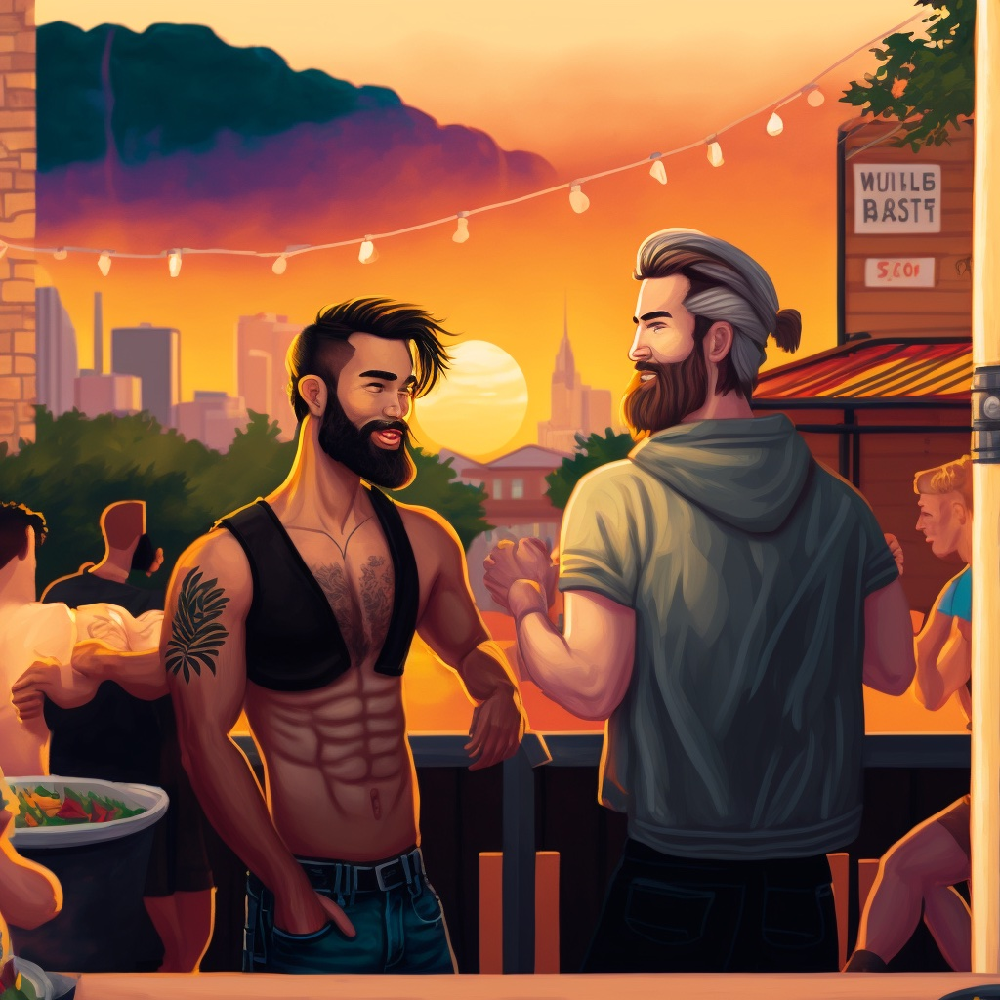

Austin 2023
- Delta Flight 2841, 789
- SFO (6am) -> ATX (2:38pm)
- Delta Flight 789, 2054
- ATX (2:38pm) -> SFO (6:20pm)
- Depart SFO airport at 6am
- Arrive in Austin at 2:38pm
- Check into hotel
- Take a rest and freshen up
- Dinner at a local restaurant, such as Iron Bear or Salty Sow
- Explore the nightlife and live music on Sixth Street
- Breakfast at a local cafe, such as Jo's Coffee or Bennu Coffee
- Visit The Blanton Museum of Art, which features a wide range of contemporary art and special exhibitions
- Lunch at a local restaurant, such as The Hightower or Odd Duck
- Shopping at the 2nd Street District, which offers a variety of shops and boutiques
- Take a walk or bike ride along the Lady Bird Lake Hike-and-Bike Trail and enjoy the views of the city and the lake
- Check out a live performance at The Long Center for the Performing Arts, which features a variety of shows and performances.
- Dinner at a local restaurant, such as Jacoby's Restaurant & Mercantile or Lenoir
- Breakfast at a local cafe, such as Easy Tiger or Cuvee Coffee Bar
- Visit the Congress Avenue Bridge to see the bat colony that lives under the bridge (check Bat Conservation International website for the activity schedule)
- Lunch somewhere we can see watch the 49ers football game at 12pm Pacific
- Return to the hotel and pack
- Depart Austin at 2:38pm
- Arrive in San Francisco at 6:20pm